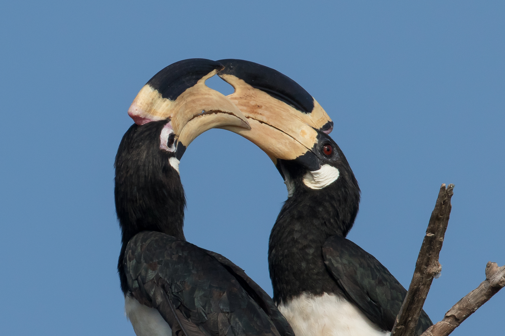
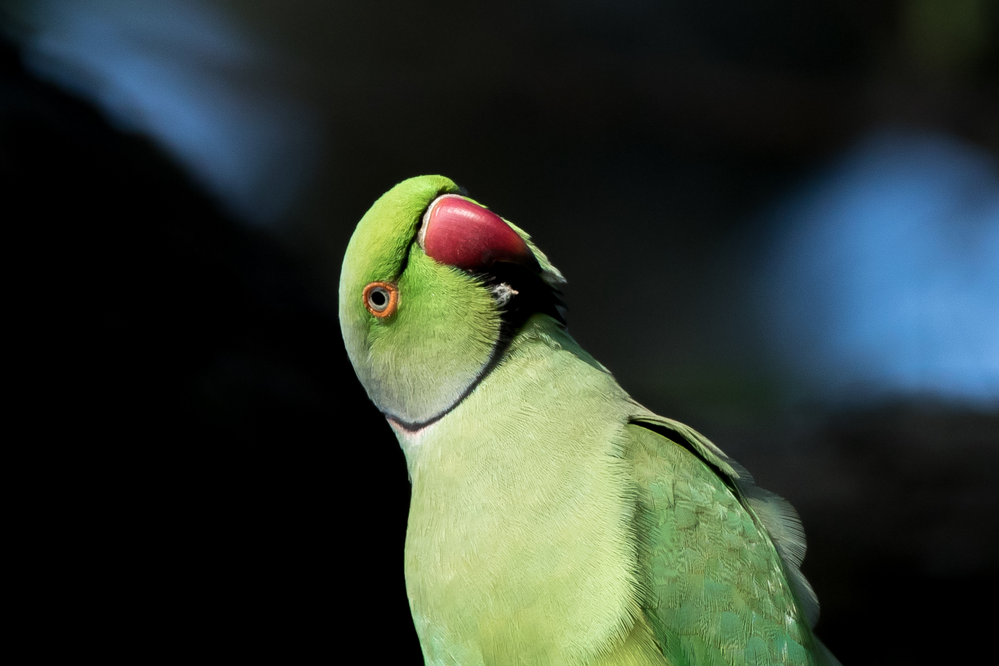
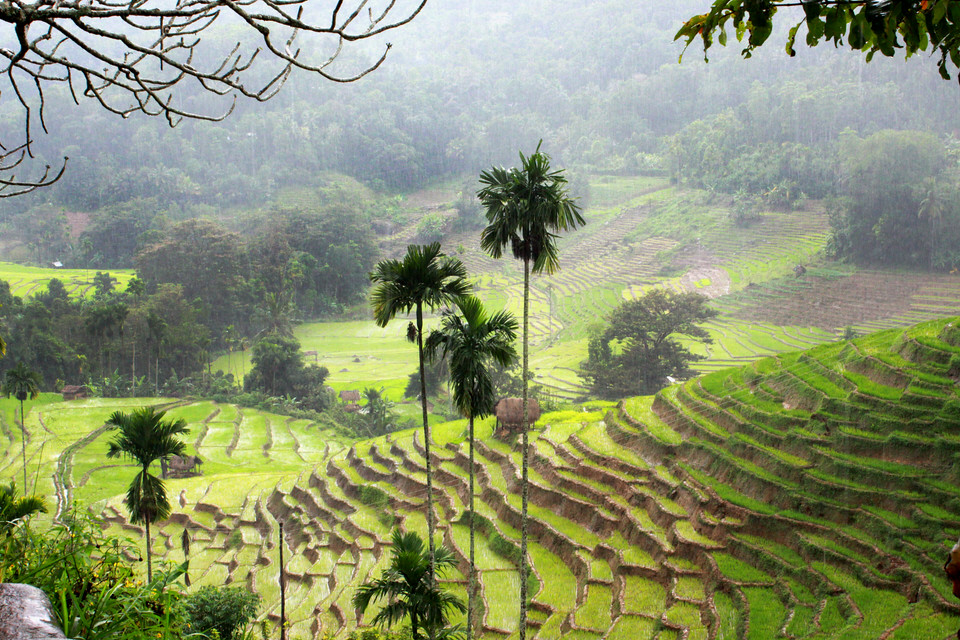
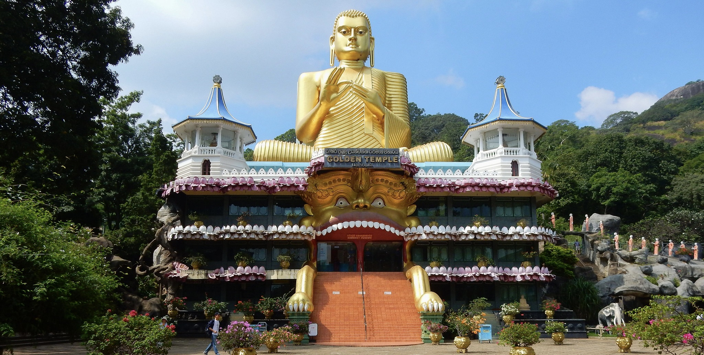
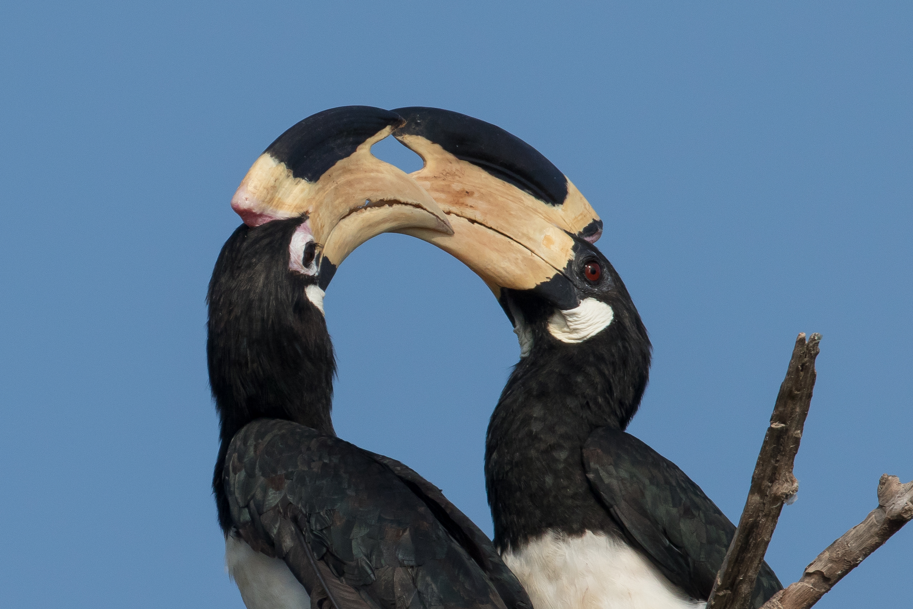
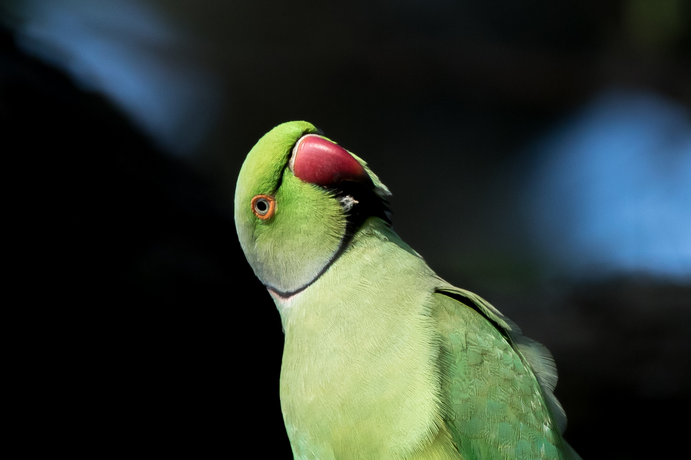
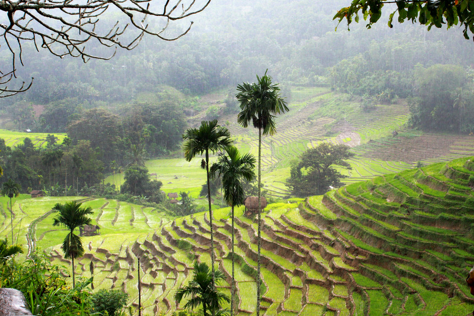
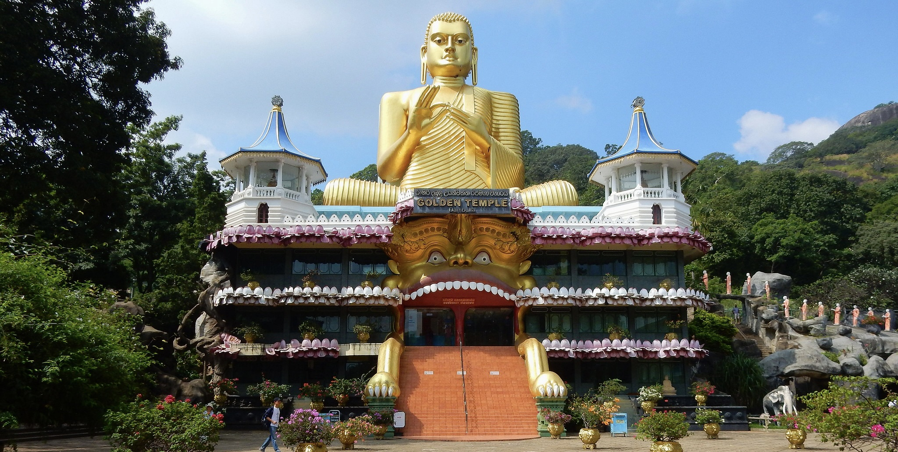

Wundervolle.
Insel
Sri Lanka, das Juwel des Indischen Ozeans, ist ein Paradies, das Besucher mit seiner atemberaubenden Naturschönheit verzaubert. Dieser Inselstaat ist eine Schatzkammer üppiger Regenwälder, goldener Strände und nebliger Berge. Jede Ecke Sri Lankas bietet einen Einblick in eine harmonische Mischung aus Natur und Tierwelt.
Read More